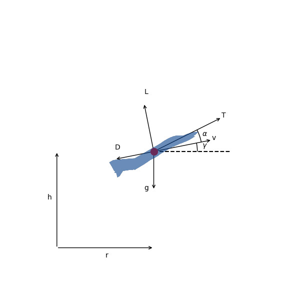
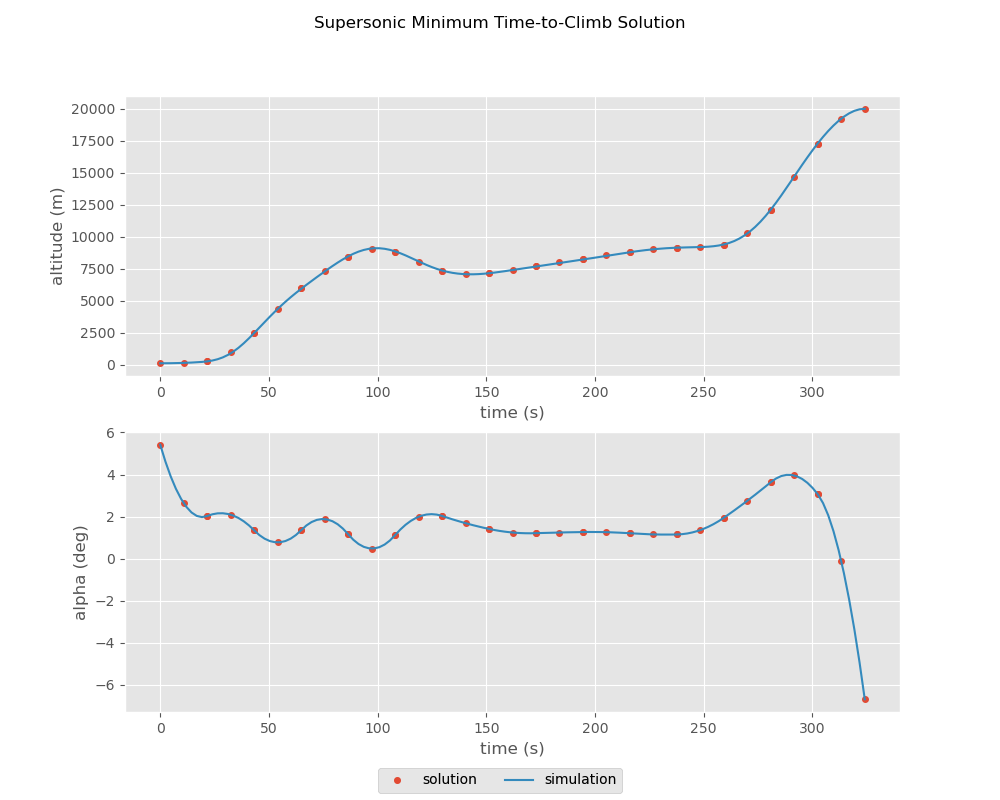

Supersonic Interceptor Minimum Time Climb¶
This example is based on the “A/C Min Time to Climb” example given in chapter 4 of [BrysonDynOpt]. It finds the angle-of-attack history required to accelerate a supersonic interceptor from near ground level, Mach 0.4 to an altitude of 20 km and Mach 1.0.
{kind=link}
The vehicle dynamics are given by
\[\begin{split}\frac{d v}{d t} &= \frac{T}{m} \cos(\alpha) - \frac{D}{m} - g \sin(\gamma) \\
\frac{d \gamma}{d t} &= \frac{T}{mv} \sin(\alpha) + \frac{L}{mv} - \frac{g \cos(\gamma)}{v} \\
\frac{d h}{d t} &= v \sin(\gamma) \\
\frac{d r}{d t} &= v \cos(\gamma) \\
\frac{d m}{d t} &= -\frac{T}{g I_{sp}}\end{split}\]
The initial conditions are
\[\begin{split}r_0 &= 0 \, \mathrm{m} \\
h_0 &= 100 \, \mathrm{m} \\
v_0 &= 135.964 \, \mathrm{m/s} \\
\gamma_0 &= 0 \, \mathrm{deg} \\
m_0 &= 19030.468 \, \mathrm{kg}\end{split}\]
and the final conditions are
\[\begin{split}h_f &= 20000 \, \mathrm{m} \\
M_f &= 1.0 \\
\gamma_0 &= 0 \, \mathrm{deg}\end{split}\]
1. The ODE System: min_time_climb_ode.py¶
import openmdao.api as om
from ...models.atmosphere import USatm1976Comp
from .aero import AeroGroup
from .prop import PropGroup
from ...models.eom import FlightPathEOM2D
class MinTimeClimbODE(om.Group):
def initialize(self):
self.options.declare('num_nodes', types=int)
def setup(self):
nn = self.options['num_nodes']
self.add_subsystem(name='atmos',
subsys=USatm1976Comp(num_nodes=nn),
promotes_inputs=['h'])
self.add_subsystem(name='aero',
subsys=AeroGroup(num_nodes=nn),
promotes_inputs=['v', 'alpha', 'S'])
self.connect('atmos.sos', 'aero.sos')
self.connect('atmos.rho', 'aero.rho')
self.add_subsystem(name='prop',
subsys=PropGroup(num_nodes=nn),
promotes_inputs=['h', 'Isp', 'throttle'])
self.connect('aero.mach', 'prop.mach')
self.add_subsystem(name='flight_dynamics',
subsys=FlightPathEOM2D(num_nodes=nn),
promotes_inputs=['m', 'v', 'gam', 'alpha'])
self.connect('aero.f_drag', 'flight_dynamics.D')
self.connect('aero.f_lift', 'flight_dynamics.L')
self.connect('prop.thrust', 'flight_dynamics.T')
2. Building and running the problem¶
In the following code we follow the following process to solve the problem:
import matplotlib.pyplot as plt
import openmdao.api as om
from openmdao.utils.assert_utils import assert_near_equal
import dymos as dm
from dymos.examples.min_time_climb.min_time_climb_ode import MinTimeClimbODE
from dymos.examples.plotting import plot_results
#
# Instantiate the problem and configure the optimization driver
#
p = om.Problem(model=om.Group())
p.driver = om.pyOptSparseDriver()
p.driver.options['optimizer'] = 'SLSQP'
p.driver.declare_coloring()
#
# Instantiate the trajectory and phase
#
traj = dm.Trajectory()
phase = dm.Phase(ode_class=MinTimeClimbODE,
transcription=dm.GaussLobatto(num_segments=15, compressed=True))
traj.add_phase('phase0', phase)
p.model.add_subsystem('traj', traj)
#
# Set the options on the optimization variables
#
phase.set_time_options(fix_initial=True, duration_bounds=(50, 400),
duration_ref=100.0)
phase.add_state('r', fix_initial=True, lower=0, upper=1.0E6,
ref=1.0E3, defect_ref=1.0E3, units='m',
rate_source='flight_dynamics.r_dot')
phase.add_state('h', fix_initial=True, lower=0, upper=20000.0,
ref=1.0E2, defect_ref=1.0E2, units='m',
rate_source='flight_dynamics.h_dot', targets=['h'])
phase.add_state('v', fix_initial=True, lower=10.0,
ref=1.0E2, defect_ref=1.0E2, units='m/s',
rate_source='flight_dynamics.v_dot', targets=['v'])
phase.add_state('gam', fix_initial=True, lower=-1.5, upper=1.5,
ref=1.0, defect_ref=1.0, units='rad',
rate_source='flight_dynamics.gam_dot', targets=['gam'])
phase.add_state('m', fix_initial=True, lower=10.0, upper=1.0E5,
ref=1.0E3, defect_ref=1.0E3, units='kg',
rate_source='prop.m_dot', targets=['m'])
phase.add_control('alpha', units='deg', lower=-8.0, upper=8.0, scaler=1.0,
rate_continuity=True, rate_continuity_scaler=100.0,
rate2_continuity=False, targets=['alpha'])
phase.add_design_parameter('S', val=49.2386, units='m**2', opt=False, targets=['S'])
phase.add_design_parameter('Isp', val=1600.0, units='s', opt=False, targets=['Isp'])
phase.add_design_parameter('throttle', val=1.0, opt=False, targets=['throttle'])
#
# Setup the boundary and path constraints
#
phase.add_boundary_constraint('h', loc='final', equals=20000, scaler=1.0E-3, units='m')
phase.add_boundary_constraint('aero.mach', loc='final', equals=1.0, shape=(1,))
phase.add_boundary_constraint('gam', loc='final', equals=0.0, units='rad')
phase.add_path_constraint(name='h', lower=100.0, upper=20000, ref=20000)
phase.add_path_constraint(name='aero.mach', lower=0.1, upper=1.8, shape=(1,))
# Minimize time at the end of the phase
phase.add_objective('time', loc='final', ref=1.0)
p.model.linear_solver = om.DirectSolver()
#
# Setup the problem and set the initial guess
#
p.setup(check=True)
p['traj.phase0.t_initial'] = 0.0
p['traj.phase0.t_duration'] = 500
p['traj.phase0.states:r'] = phase.interpolate(ys=[0.0, 50000.0], nodes='state_input')
p['traj.phase0.states:h'] = phase.interpolate(ys=[100.0, 20000.0], nodes='state_input')
p['traj.phase0.states:v'] = phase.interpolate(ys=[135.964, 283.159], nodes='state_input')
p['traj.phase0.states:gam'] = phase.interpolate(ys=[0.0, 0.0], nodes='state_input')
p['traj.phase0.states:m'] = phase.interpolate(ys=[19030.468, 10000.], nodes='state_input')
p['traj.phase0.controls:alpha'] = phase.interpolate(ys=[0.0, 0.0], nodes='control_input')
#
# Solve for the optimal trajectory
#
dm.run_problem(p)
#
# Test the results
#
print(p.get_val('traj.phase0.t_duration'))
#
# Get the explicitly simulated solution and plot the results
#
exp_out = traj.simulate()
plot_results([('traj.phase0.timeseries.time', 'traj.phase0.timeseries.states:h',
'time (s)', 'altitude (m)'),
('traj.phase0.timeseries.time', 'traj.phase0.timeseries.controls:alpha',
'time (s)', 'alpha (deg)')],
title='Supersonic Minimum Time-to-Climb Solution',
p_sol=p, p_sim=exp_out)
plt.show()
INFO: checking out_of_order
INFO: checking system
INFO: checking solvers
INFO: checking dup_inputs
INFO: checking missing_recorders
WARNING: The Problem has no recorder of any kind attached
INFO: checking comp_has_no_outputs
INFO: checking out_of_order
INFO: checking system
INFO: checking solvers
INFO: checking dup_inputs
INFO: checking missing_recorders
WARNING: The Problem has no recorder of any kind attached
INFO: checking comp_has_no_outputs
Full total jacobian was computed 3 times, taking 0.202231 seconds.
Total jacobian shape: (181, 107)
Jacobian shape: (181, 107) (12.46% nonzero)
FWD solves: 19 REV solves: 0
Total colors vs. total size: 19 vs 107 (82.2% improvement)
Sparsity computed using tolerance: 1e-25
Time to compute sparsity: 0.202231 sec.
Time to compute coloring: 0.005547 sec.
Optimization Problem -- Optimization using pyOpt_sparse
================================================================================
Objective Function: _objfunc
Solution:
--------------------------------------------------------------------------------
Total Time: 2.5874
User Objective Time : 0.8165
User Sensitivity Time : 0.9691
Interface Time : 0.4461
Opt Solver Time: 0.3557
Calls to Objective Function : 67
Calls to Sens Function : 59
Objectives
Index Name Value Optimum
0 traj.phases.phase0.time.time 3.240596E+02 0.000000E+00
Variables (c - continuous, i - integer, d - discrete)
Index Name Type Lower Bound Value Upper Bound Status
0 traj.phases.phase0.time_extents.t_duration_0 c 5.000000E-01 3.240596E+00 4.000000E+00
1 traj.phases.phase0.indep_states.states:r_0 c 0.000000E+00 4.317493E+00 1.000000E+03
2 traj.phases.phase0.indep_states.states:r_1 c 0.000000E+00 1.027139E+01 1.000000E+03
3 traj.phases.phase0.indep_states.states:r_2 c 0.000000E+00 1.580735E+01 1.000000E+03
4 traj.phases.phase0.indep_states.states:r_3 c 0.000000E+00 2.152481E+01 1.000000E+03
5 traj.phases.phase0.indep_states.states:r_4 c 0.000000E+00 2.789608E+01 1.000000E+03
6 traj.phases.phase0.indep_states.states:r_5 c 0.000000E+00 3.554621E+01 1.000000E+03
7 traj.phases.phase0.indep_states.states:r_6 c 0.000000E+00 4.442308E+01 1.000000E+03
8 traj.phases.phase0.indep_states.states:r_7 c 0.000000E+00 5.373066E+01 1.000000E+03
9 traj.phases.phase0.indep_states.states:r_8 c 0.000000E+00 6.338182E+01 1.000000E+03
10 traj.phases.phase0.indep_states.states:r_9 c 0.000000E+00 7.340150E+01 1.000000E+03
11 traj.phases.phase0.indep_states.states:r_10 c 0.000000E+00 8.386356E+01 1.000000E+03
12 traj.phases.phase0.indep_states.states:r_11 c 0.000000E+00 9.487291E+01 1.000000E+03
13 traj.phases.phase0.indep_states.states:r_12 c 0.000000E+00 1.054338E+02 1.000000E+03
14 traj.phases.phase0.indep_states.states:r_13 c 0.000000E+00 1.130942E+02 1.000000E+03
15 traj.phases.phase0.indep_states.states:r_14 c 0.000000E+00 1.194006E+02 1.000000E+03
16 traj.phases.phase0.indep_states.states:h_0 c 0.000000E+00 2.396310E+00 2.000000E+02
17 traj.phases.phase0.indep_states.states:h_1 c 0.000000E+00 2.497605E+01 2.000000E+02
18 traj.phases.phase0.indep_states.states:h_2 c 0.000000E+00 5.950321E+01 2.000000E+02
19 traj.phases.phase0.indep_states.states:h_3 c 0.000000E+00 8.439294E+01 2.000000E+02
20 traj.phases.phase0.indep_states.states:h_4 c 0.000000E+00 8.822692E+01 2.000000E+02
21 traj.phases.phase0.indep_states.states:h_5 c 0.000000E+00 7.334663E+01 2.000000E+02
22 traj.phases.phase0.indep_states.states:h_6 c 0.000000E+00 7.142300E+01 2.000000E+02
23 traj.phases.phase0.indep_states.states:h_7 c 0.000000E+00 7.707373E+01 2.000000E+02
24 traj.phases.phase0.indep_states.states:h_8 c 0.000000E+00 8.257032E+01 2.000000E+02
25 traj.phases.phase0.indep_states.states:h_9 c 0.000000E+00 8.810180E+01 2.000000E+02
26 traj.phases.phase0.indep_states.states:h_10 c 0.000000E+00 9.129331E+01 2.000000E+02
27 traj.phases.phase0.indep_states.states:h_11 c 0.000000E+00 9.363230E+01 2.000000E+02
28 traj.phases.phase0.indep_states.states:h_12 c 0.000000E+00 1.210383E+02 2.000000E+02
29 traj.phases.phase0.indep_states.states:h_13 c 0.000000E+00 1.727806E+02 2.000000E+02
30 traj.phases.phase0.indep_states.states:h_14 c 0.000000E+00 2.000000E+02 2.000000E+02 u
31 traj.phases.phase0.indep_states.states:v_0 c 1.000000E-01 2.631009E+00 1.000000E+19
32 traj.phases.phase0.indep_states.states:v_1 c 1.000000E-01 3.105351E+00 1.000000E+19
33 traj.phases.phase0.indep_states.states:v_2 c 1.000000E-01 2.949843E+00 1.000000E+19
34 traj.phases.phase0.indep_states.states:v_3 c 1.000000E-01 2.844015E+00 1.000000E+19
35 traj.phases.phase0.indep_states.states:v_4 c 1.000000E-01 3.246818E+00 1.000000E+19
36 traj.phases.phase0.indep_states.states:v_5 c 1.000000E-01 3.935497E+00 1.000000E+19
37 traj.phases.phase0.indep_states.states:v_6 c 1.000000E-01 4.239138E+00 1.000000E+19
38 traj.phases.phase0.indep_states.states:v_7 c 1.000000E-01 4.391685E+00 1.000000E+19
39 traj.phases.phase0.indep_states.states:v_8 c 1.000000E-01 4.559059E+00 1.000000E+19
40 traj.phases.phase0.indep_states.states:v_9 c 1.000000E-01 4.734737E+00 1.000000E+19
41 traj.phases.phase0.indep_states.states:v_10 c 1.000000E-01 4.969174E+00 1.000000E+19
42 traj.phases.phase0.indep_states.states:v_11 c 1.000000E-01 5.191988E+00 1.000000E+19
43 traj.phases.phase0.indep_states.states:v_12 c 1.000000E-01 4.819234E+00 1.000000E+19
44 traj.phases.phase0.indep_states.states:v_13 c 1.000000E-01 3.704108E+00 1.000000E+19
45 traj.phases.phase0.indep_states.states:v_14 c 1.000000E-01 2.950864E+00 1.000000E+19
46 traj.phases.phase0.indep_states.states:gam_0 c -1.500000E+00 9.842086E-02 1.500000E+00
47 traj.phases.phase0.indep_states.states:gam_1 c -1.500000E+00 5.982124E-01 1.500000E+00
48 traj.phases.phase0.indep_states.states:gam_2 c -1.500000E+00 4.576001E-01 1.500000E+00
49 traj.phases.phase0.indep_states.states:gam_3 c -1.500000E+00 3.203152E-01 1.500000E+00
50 traj.phases.phase0.indep_states.states:gam_4 c -1.500000E+00 -1.749009E-01 1.500000E+00
51 traj.phases.phase0.indep_states.states:gam_5 c -1.500000E+00 -1.198595E-01 1.500000E+00
52 traj.phases.phase0.indep_states.states:gam_6 c -1.500000E+00 4.646593E-02 1.500000E+00
53 traj.phases.phase0.indep_states.states:gam_7 c -1.500000E+00 6.007976E-02 1.500000E+00
54 traj.phases.phase0.indep_states.states:gam_8 c -1.500000E+00 5.620266E-02 1.500000E+00
55 traj.phases.phase0.indep_states.states:gam_9 c -1.500000E+00 4.936825E-02 1.500000E+00
56 traj.phases.phase0.indep_states.states:gam_10 c -1.500000E+00 1.045362E-02 1.500000E+00
57 traj.phases.phase0.indep_states.states:gam_11 c -1.500000E+00 7.778939E-02 1.500000E+00
58 traj.phases.phase0.indep_states.states:gam_12 c -1.500000E+00 4.658754E-01 1.500000E+00
59 traj.phases.phase0.indep_states.states:gam_13 c -1.500000E+00 6.282331E-01 1.500000E+00
60 traj.phases.phase0.indep_states.states:gam_14 c -1.500000E+00 3.685248E-20 1.500000E+00
61 traj.phases.phase0.indep_states.states:m_0 c 1.000000E-02 1.884020E+01 1.000000E+02
62 traj.phases.phase0.indep_states.states:m_1 c 1.000000E-02 1.863611E+01 1.000000E+02
63 traj.phases.phase0.indep_states.states:m_2 c 1.000000E-02 1.847457E+01 1.000000E+02
64 traj.phases.phase0.indep_states.states:m_3 c 1.000000E-02 1.835553E+01 1.000000E+02
65 traj.phases.phase0.indep_states.states:m_4 c 1.000000E-02 1.825261E+01 1.000000E+02
66 traj.phases.phase0.indep_states.states:m_5 c 1.000000E-02 1.811675E+01 1.000000E+02
67 traj.phases.phase0.indep_states.states:m_6 c 1.000000E-02 1.794612E+01 1.000000E+02
68 traj.phases.phase0.indep_states.states:m_7 c 1.000000E-02 1.777071E+01 1.000000E+02
69 traj.phases.phase0.indep_states.states:m_8 c 1.000000E-02 1.759673E+01 1.000000E+02
70 traj.phases.phase0.indep_states.states:m_9 c 1.000000E-02 1.742392E+01 1.000000E+02
71 traj.phases.phase0.indep_states.states:m_10 c 1.000000E-02 1.725043E+01 1.000000E+02
72 traj.phases.phase0.indep_states.states:m_11 c 1.000000E-02 1.707084E+01 1.000000E+02
73 traj.phases.phase0.indep_states.states:m_12 c 1.000000E-02 1.691154E+01 1.000000E+02
74 traj.phases.phase0.indep_states.states:m_13 c 1.000000E-02 1.683635E+01 1.000000E+02
75 traj.phases.phase0.indep_states.states:m_14 c 1.000000E-02 1.681295E+01 1.000000E+02
76 traj.phases.phase0.control_group.indep_controls.controls:alpha_0 c -8.000000E+00 5.418208E+00 8.000000E+00
77 traj.phases.phase0.control_group.indep_controls.controls:alpha_1 c -8.000000E+00 2.640788E+00 8.000000E+00
78 traj.phases.phase0.control_group.indep_controls.controls:alpha_2 c -8.000000E+00 2.026949E+00 8.000000E+00
79 traj.phases.phase0.control_group.indep_controls.controls:alpha_3 c -8.000000E+00 2.090922E+00 8.000000E+00
80 traj.phases.phase0.control_group.indep_controls.controls:alpha_4 c -8.000000E+00 1.346938E+00 8.000000E+00
81 traj.phases.phase0.control_group.indep_controls.controls:alpha_5 c -8.000000E+00 7.741762E-01 8.000000E+00
82 traj.phases.phase0.control_group.indep_controls.controls:alpha_6 c -8.000000E+00 1.351812E+00 8.000000E+00
83 traj.phases.phase0.control_group.indep_controls.controls:alpha_7 c -8.000000E+00 1.881138E+00 8.000000E+00
84 traj.phases.phase0.control_group.indep_controls.controls:alpha_8 c -8.000000E+00 1.163445E+00 8.000000E+00
85 traj.phases.phase0.control_group.indep_controls.controls:alpha_9 c -8.000000E+00 4.810965E-01 8.000000E+00
86 traj.phases.phase0.control_group.indep_controls.controls:alpha_10 c -8.000000E+00 1.116455E+00 8.000000E+00
87 traj.phases.phase0.control_group.indep_controls.controls:alpha_11 c -8.000000E+00 1.992254E+00 8.000000E+00
88 traj.phases.phase0.control_group.indep_controls.controls:alpha_12 c -8.000000E+00 2.031230E+00 8.000000E+00
89 traj.phases.phase0.control_group.indep_controls.controls:alpha_13 c -8.000000E+00 1.686972E+00 8.000000E+00
90 traj.phases.phase0.control_group.indep_controls.controls:alpha_14 c -8.000000E+00 1.413069E+00 8.000000E+00
91 traj.phases.phase0.control_group.indep_controls.controls:alpha_15 c -8.000000E+00 1.243305E+00 8.000000E+00
92 traj.phases.phase0.control_group.indep_controls.controls:alpha_16 c -8.000000E+00 1.211462E+00 8.000000E+00
93 traj.phases.phase0.control_group.indep_controls.controls:alpha_17 c -8.000000E+00 1.243690E+00 8.000000E+00
94 traj.phases.phase0.control_group.indep_controls.controls:alpha_18 c -8.000000E+00 1.266136E+00 8.000000E+00
95 traj.phases.phase0.control_group.indep_controls.controls:alpha_19 c -8.000000E+00 1.259757E+00 8.000000E+00
96 traj.phases.phase0.control_group.indep_controls.controls:alpha_20 c -8.000000E+00 1.205511E+00 8.000000E+00
97 traj.phases.phase0.control_group.indep_controls.controls:alpha_21 c -8.000000E+00 1.152677E+00 8.000000E+00
98 traj.phases.phase0.control_group.indep_controls.controls:alpha_22 c -8.000000E+00 1.150533E+00 8.000000E+00
99 traj.phases.phase0.control_group.indep_controls.controls:alpha_23 c -8.000000E+00 1.360798E+00 8.000000E+00
100 traj.phases.phase0.control_group.indep_controls.controls:alpha_24 c -8.000000E+00 1.945191E+00 8.000000E+00
101 traj.phases.phase0.control_group.indep_controls.controls:alpha_25 c -8.000000E+00 2.754221E+00 8.000000E+00
102 traj.phases.phase0.control_group.indep_controls.controls:alpha_26 c -8.000000E+00 3.638393E+00 8.000000E+00
103 traj.phases.phase0.control_group.indep_controls.controls:alpha_27 c -8.000000E+00 3.954786E+00 8.000000E+00
104 traj.phases.phase0.control_group.indep_controls.controls:alpha_28 c -8.000000E+00 3.060476E+00 8.000000E+00
105 traj.phases.phase0.control_group.indep_controls.controls:alpha_29 c -8.000000E+00 -1.262619E-01 8.000000E+00
106 traj.phases.phase0.control_group.indep_controls.controls:alpha_30 c -8.000000E+00 -6.687151E+00 8.000000E+00
Constraints (i - inequality, e - equality)
Index Name Type Lower Value Upper Status Lagrange Multiplier (N/A)
0 traj.phases.phase0.collocation_constraint.defects:r e 0.000000E+00 2.026221E-09 0.000000E+00 9.00000E+100
1 traj.phases.phase0.collocation_constraint.defects:r e 0.000000E+00 5.638216E-09 0.000000E+00 9.00000E+100
2 traj.phases.phase0.collocation_constraint.defects:r e 0.000000E+00 5.594961E-09 0.000000E+00 9.00000E+100
3 traj.phases.phase0.collocation_constraint.defects:r e 0.000000E+00 3.879119E-09 0.000000E+00 9.00000E+100
4 traj.phases.phase0.collocation_constraint.defects:r e 0.000000E+00 6.184770E-09 0.000000E+00 9.00000E+100
5 traj.phases.phase0.collocation_constraint.defects:r e 0.000000E+00 5.074835E-09 0.000000E+00 9.00000E+100
6 traj.phases.phase0.collocation_constraint.defects:r e 0.000000E+00 2.058958E-09 0.000000E+00 9.00000E+100
7 traj.phases.phase0.collocation_constraint.defects:r e 0.000000E+00 2.311964E-09 0.000000E+00 9.00000E+100
8 traj.phases.phase0.collocation_constraint.defects:r e 0.000000E+00 2.351906E-10 0.000000E+00 9.00000E+100
9 traj.phases.phase0.collocation_constraint.defects:r e 0.000000E+00 4.392282E-11 0.000000E+00 9.00000E+100
10 traj.phases.phase0.collocation_constraint.defects:r e 0.000000E+00 8.805135E-11 0.000000E+00 9.00000E+100
11 traj.phases.phase0.collocation_constraint.defects:r e 0.000000E+00 1.058261E-09 0.000000E+00 9.00000E+100
12 traj.phases.phase0.collocation_constraint.defects:r e 0.000000E+00 9.868602E-10 0.000000E+00 9.00000E+100
13 traj.phases.phase0.collocation_constraint.defects:r e 0.000000E+00 7.397919E-11 0.000000E+00 9.00000E+100
14 traj.phases.phase0.collocation_constraint.defects:r e 0.000000E+00 -2.505528E-10 0.000000E+00 9.00000E+100
15 traj.phases.phase0.collocation_constraint.defects:h e 0.000000E+00 1.276761E-08 0.000000E+00 9.00000E+100
16 traj.phases.phase0.collocation_constraint.defects:h e 0.000000E+00 4.102132E-08 0.000000E+00 9.00000E+100
17 traj.phases.phase0.collocation_constraint.defects:h e 0.000000E+00 3.557955E-08 0.000000E+00 9.00000E+100
18 traj.phases.phase0.collocation_constraint.defects:h e 0.000000E+00 3.510911E-08 0.000000E+00 9.00000E+100
19 traj.phases.phase0.collocation_constraint.defects:h e 0.000000E+00 1.847447E-08 0.000000E+00 9.00000E+100
20 traj.phases.phase0.collocation_constraint.defects:h e 0.000000E+00 -1.929806E-08 0.000000E+00 9.00000E+100
21 traj.phases.phase0.collocation_constraint.defects:h e 0.000000E+00 1.688321E-09 0.000000E+00 9.00000E+100
22 traj.phases.phase0.collocation_constraint.defects:h e 0.000000E+00 -1.189123E-09 0.000000E+00 9.00000E+100
23 traj.phases.phase0.collocation_constraint.defects:h e 0.000000E+00 -2.972909E-09 0.000000E+00 9.00000E+100
24 traj.phases.phase0.collocation_constraint.defects:h e 0.000000E+00 2.435510E-10 0.000000E+00 9.00000E+100
25 traj.phases.phase0.collocation_constraint.defects:h e 0.000000E+00 9.268660E-10 0.000000E+00 9.00000E+100
26 traj.phases.phase0.collocation_constraint.defects:h e 0.000000E+00 5.640191E-09 0.000000E+00 9.00000E+100
27 traj.phases.phase0.collocation_constraint.defects:h e 0.000000E+00 -3.380276E-09 0.000000E+00 9.00000E+100
28 traj.phases.phase0.collocation_constraint.defects:h e 0.000000E+00 4.136539E-09 0.000000E+00 9.00000E+100
29 traj.phases.phase0.collocation_constraint.defects:h e 0.000000E+00 -3.384952E-09 0.000000E+00 9.00000E+100
30 traj.phases.phase0.collocation_constraint.defects:v e 0.000000E+00 6.298770E-10 0.000000E+00 9.00000E+100
31 traj.phases.phase0.collocation_constraint.defects:v e 0.000000E+00 6.708070E-09 0.000000E+00 9.00000E+100
32 traj.phases.phase0.collocation_constraint.defects:v e 0.000000E+00 4.361158E-09 0.000000E+00 9.00000E+100
33 traj.phases.phase0.collocation_constraint.defects:v e 0.000000E+00 5.465616E-09 0.000000E+00 9.00000E+100
34 traj.phases.phase0.collocation_constraint.defects:v e 0.000000E+00 1.594096E-09 0.000000E+00 9.00000E+100
35 traj.phases.phase0.collocation_constraint.defects:v e 0.000000E+00 7.857889E-10 0.000000E+00 9.00000E+100
36 traj.phases.phase0.collocation_constraint.defects:v e 0.000000E+00 1.516303E-09 0.000000E+00 9.00000E+100
37 traj.phases.phase0.collocation_constraint.defects:v e 0.000000E+00 3.248887E-10 0.000000E+00 9.00000E+100
38 traj.phases.phase0.collocation_constraint.defects:v e 0.000000E+00 1.243546E-10 0.000000E+00 9.00000E+100
39 traj.phases.phase0.collocation_constraint.defects:v e 0.000000E+00 2.700953E-12 0.000000E+00 9.00000E+100
40 traj.phases.phase0.collocation_constraint.defects:v e 0.000000E+00 2.597814E-11 0.000000E+00 9.00000E+100
41 traj.phases.phase0.collocation_constraint.defects:v e 0.000000E+00 2.287317E-10 0.000000E+00 9.00000E+100
42 traj.phases.phase0.collocation_constraint.defects:v e 0.000000E+00 9.044786E-10 0.000000E+00 9.00000E+100
43 traj.phases.phase0.collocation_constraint.defects:v e 0.000000E+00 4.535706E-10 0.000000E+00 9.00000E+100
44 traj.phases.phase0.collocation_constraint.defects:v e 0.000000E+00 7.637487E-10 0.000000E+00 9.00000E+100
45 traj.phases.phase0.collocation_constraint.defects:gam e 0.000000E+00 8.749060E-11 0.000000E+00 9.00000E+100
46 traj.phases.phase0.collocation_constraint.defects:gam e 0.000000E+00 -8.179544E-09 0.000000E+00 9.00000E+100
47 traj.phases.phase0.collocation_constraint.defects:gam e 0.000000E+00 -7.376550E-09 0.000000E+00 9.00000E+100
48 traj.phases.phase0.collocation_constraint.defects:gam e 0.000000E+00 -8.676266E-09 0.000000E+00 9.00000E+100
49 traj.phases.phase0.collocation_constraint.defects:gam e 0.000000E+00 -3.283130E-09 0.000000E+00 9.00000E+100
50 traj.phases.phase0.collocation_constraint.defects:gam e 0.000000E+00 -1.053876E-09 0.000000E+00 9.00000E+100
51 traj.phases.phase0.collocation_constraint.defects:gam e 0.000000E+00 -1.426768E-09 0.000000E+00 9.00000E+100
52 traj.phases.phase0.collocation_constraint.defects:gam e 0.000000E+00 -2.302681E-10 0.000000E+00 9.00000E+100
53 traj.phases.phase0.collocation_constraint.defects:gam e 0.000000E+00 -3.784329E-11 0.000000E+00 9.00000E+100
54 traj.phases.phase0.collocation_constraint.defects:gam e 0.000000E+00 -4.824447E-12 0.000000E+00 9.00000E+100
55 traj.phases.phase0.collocation_constraint.defects:gam e 0.000000E+00 -2.054191E-11 0.000000E+00 9.00000E+100
56 traj.phases.phase0.collocation_constraint.defects:gam e 0.000000E+00 -7.300992E-11 0.000000E+00 9.00000E+100
57 traj.phases.phase0.collocation_constraint.defects:gam e 0.000000E+00 -5.656088E-10 0.000000E+00 9.00000E+100
58 traj.phases.phase0.collocation_constraint.defects:gam e 0.000000E+00 1.252155E-10 0.000000E+00 9.00000E+100
59 traj.phases.phase0.collocation_constraint.defects:gam e 0.000000E+00 -6.519571E-11 0.000000E+00 9.00000E+100
60 traj.phases.phase0.collocation_constraint.defects:m e 0.000000E+00 -1.534922E-11 0.000000E+00 9.00000E+100
61 traj.phases.phase0.collocation_constraint.defects:m e 0.000000E+00 -6.292513E-11 0.000000E+00 9.00000E+100
62 traj.phases.phase0.collocation_constraint.defects:m e 0.000000E+00 1.371563E-11 0.000000E+00 9.00000E+100
63 traj.phases.phase0.collocation_constraint.defects:m e 0.000000E+00 4.040037E-11 0.000000E+00 9.00000E+100
64 traj.phases.phase0.collocation_constraint.defects:m e 0.000000E+00 2.470678E-11 0.000000E+00 9.00000E+100
65 traj.phases.phase0.collocation_constraint.defects:m e 0.000000E+00 1.265171E-11 0.000000E+00 9.00000E+100
66 traj.phases.phase0.collocation_constraint.defects:m e 0.000000E+00 6.839724E-13 0.000000E+00 9.00000E+100
67 traj.phases.phase0.collocation_constraint.defects:m e 0.000000E+00 -2.667426E-12 0.000000E+00 9.00000E+100
68 traj.phases.phase0.collocation_constraint.defects:m e 0.000000E+00 -1.430959E-12 0.000000E+00 9.00000E+100
69 traj.phases.phase0.collocation_constraint.defects:m e 0.000000E+00 1.299040E-14 0.000000E+00 9.00000E+100
70 traj.phases.phase0.collocation_constraint.defects:m e 0.000000E+00 2.265357E-13 0.000000E+00 9.00000E+100
71 traj.phases.phase0.collocation_constraint.defects:m e 0.000000E+00 -2.229782E-12 0.000000E+00 9.00000E+100
72 traj.phases.phase0.collocation_constraint.defects:m e 0.000000E+00 -3.936580E-12 0.000000E+00 9.00000E+100
73 traj.phases.phase0.collocation_constraint.defects:m e 0.000000E+00 1.824149E-12 0.000000E+00 9.00000E+100
74 traj.phases.phase0.collocation_constraint.defects:m e 0.000000E+00 2.939379E-12 0.000000E+00 9.00000E+100
75 traj.phases.phase0.continuity_comp.defect_control_rates:alpha_rate e 0.000000E+00 -6.745846E-13 0.000000E+00 9.00000E+100
76 traj.phases.phase0.continuity_comp.defect_control_rates:alpha_rate e 0.000000E+00 0.000000E+00 0.000000E+00 9.00000E+100
77 traj.phases.phase0.continuity_comp.defect_control_rates:alpha_rate e 0.000000E+00 -1.349169E-12 0.000000E+00 9.00000E+100
78 traj.phases.phase0.continuity_comp.defect_control_rates:alpha_rate e 0.000000E+00 -2.248615E-13 0.000000E+00 9.00000E+100
79 traj.phases.phase0.continuity_comp.defect_control_rates:alpha_rate e 0.000000E+00 4.497230E-13 0.000000E+00 9.00000E+100
80 traj.phases.phase0.continuity_comp.defect_control_rates:alpha_rate e 0.000000E+00 4.497230E-13 0.000000E+00 9.00000E+100
81 traj.phases.phase0.continuity_comp.defect_control_rates:alpha_rate e 0.000000E+00 1.349169E-12 0.000000E+00 9.00000E+100
82 traj.phases.phase0.continuity_comp.defect_control_rates:alpha_rate e 0.000000E+00 -3.302654E-13 0.000000E+00 9.00000E+100
83 traj.phases.phase0.continuity_comp.defect_control_rates:alpha_rate e 0.000000E+00 -1.651327E-13 0.000000E+00 9.00000E+100
84 traj.phases.phase0.continuity_comp.defect_control_rates:alpha_rate e 0.000000E+00 6.745846E-13 0.000000E+00 9.00000E+100
85 traj.phases.phase0.continuity_comp.defect_control_rates:alpha_rate e 0.000000E+00 -8.853922E-13 0.000000E+00 9.00000E+100
86 traj.phases.phase0.continuity_comp.defect_control_rates:alpha_rate e 0.000000E+00 1.798892E-12 0.000000E+00 9.00000E+100
87 traj.phases.phase0.continuity_comp.defect_control_rates:alpha_rate e 0.000000E+00 -8.994461E-13 0.000000E+00 9.00000E+100
88 traj.phases.phase0.continuity_comp.defect_control_rates:alpha_rate e 0.000000E+00 4.497230E-13 0.000000E+00 9.00000E+100
89 traj.phases.phase0.final_boundary_constraints.final_value:h e 2.000000E+01 2.000000E+01 2.000000E+01 9.00000E+100
90 traj.phases.phase0.final_boundary_constraints.final_value:mach e 1.000000E+00 1.000000E+00 1.000000E+00 9.00000E+100
91 traj.phases.phase0.final_boundary_constraints.final_value:gam e 0.000000E+00 3.685248E-20 0.000000E+00 9.00000E+100
92 traj.phases.phase0.path_constraints.path:h i 5.000000E-03 5.000000E-03 1.000000E+00 l 9.00000E+100
93 traj.phases.phase0.path_constraints.path:h i 5.000000E-03 5.000000E-03 1.000000E+00 l 9.00000E+100
94 traj.phases.phase0.path_constraints.path:h i 5.000000E-03 1.198155E-02 1.000000E+00 9.00000E+100
95 traj.phases.phase0.path_constraints.path:h i 5.000000E-03 1.198155E-02 1.000000E+00 9.00000E+100
96 traj.phases.phase0.path_constraints.path:h i 5.000000E-03 4.830813E-02 1.000000E+00 9.00000E+100
97 traj.phases.phase0.path_constraints.path:h i 5.000000E-03 1.248802E-01 1.000000E+00 9.00000E+100
98 traj.phases.phase0.path_constraints.path:h i 5.000000E-03 1.248802E-01 1.000000E+00 9.00000E+100
99 traj.phases.phase0.path_constraints.path:h i 5.000000E-03 2.172148E-01 1.000000E+00 9.00000E+100
100 traj.phases.phase0.path_constraints.path:h i 5.000000E-03 2.975161E-01 1.000000E+00 9.00000E+100
101 traj.phases.phase0.path_constraints.path:h i 5.000000E-03 2.975161E-01 1.000000E+00 9.00000E+100
102 traj.phases.phase0.path_constraints.path:h i 5.000000E-03 3.652460E-01 1.000000E+00 9.00000E+100
103 traj.phases.phase0.path_constraints.path:h i 5.000000E-03 4.219647E-01 1.000000E+00 9.00000E+100
104 traj.phases.phase0.path_constraints.path:h i 5.000000E-03 4.219647E-01 1.000000E+00 9.00000E+100
105 traj.phases.phase0.path_constraints.path:h i 5.000000E-03 4.512695E-01 1.000000E+00 9.00000E+100
106 traj.phases.phase0.path_constraints.path:h i 5.000000E-03 4.411346E-01 1.000000E+00 9.00000E+100
107 traj.phases.phase0.path_constraints.path:h i 5.000000E-03 4.411346E-01 1.000000E+00 9.00000E+100
108 traj.phases.phase0.path_constraints.path:h i 5.000000E-03 4.026592E-01 1.000000E+00 9.00000E+100
109 traj.phases.phase0.path_constraints.path:h i 5.000000E-03 3.667331E-01 1.000000E+00 9.00000E+100
110 traj.phases.phase0.path_constraints.path:h i 5.000000E-03 3.667331E-01 1.000000E+00 9.00000E+100
111 traj.phases.phase0.path_constraints.path:h i 5.000000E-03 3.529114E-01 1.000000E+00 9.00000E+100
112 traj.phases.phase0.path_constraints.path:h i 5.000000E-03 3.571150E-01 1.000000E+00 9.00000E+100
113 traj.phases.phase0.path_constraints.path:h i 5.000000E-03 3.571150E-01 1.000000E+00 9.00000E+100
114 traj.phases.phase0.path_constraints.path:h i 5.000000E-03 3.703400E-01 1.000000E+00 9.00000E+100
115 traj.phases.phase0.path_constraints.path:h i 5.000000E-03 3.853686E-01 1.000000E+00 9.00000E+100
116 traj.phases.phase0.path_constraints.path:h i 5.000000E-03 3.853686E-01 1.000000E+00 9.00000E+100
117 traj.phases.phase0.path_constraints.path:h i 5.000000E-03 3.992127E-01 1.000000E+00 9.00000E+100
118 traj.phases.phase0.path_constraints.path:h i 5.000000E-03 4.128516E-01 1.000000E+00 9.00000E+100
119 traj.phases.phase0.path_constraints.path:h i 5.000000E-03 4.128516E-01 1.000000E+00 9.00000E+100
120 traj.phases.phase0.path_constraints.path:h i 5.000000E-03 4.269834E-01 1.000000E+00 9.00000E+100
121 traj.phases.phase0.path_constraints.path:h i 5.000000E-03 4.405090E-01 1.000000E+00 9.00000E+100
122 traj.phases.phase0.path_constraints.path:h i 5.000000E-03 4.405090E-01 1.000000E+00 9.00000E+100
123 traj.phases.phase0.path_constraints.path:h i 5.000000E-03 4.509413E-01 1.000000E+00 9.00000E+100
124 traj.phases.phase0.path_constraints.path:h i 5.000000E-03 4.564666E-01 1.000000E+00 9.00000E+100
125 traj.phases.phase0.path_constraints.path:h i 5.000000E-03 4.564666E-01 1.000000E+00 9.00000E+100
126 traj.phases.phase0.path_constraints.path:h i 5.000000E-03 4.575675E-01 1.000000E+00 9.00000E+100
127 traj.phases.phase0.path_constraints.path:h i 5.000000E-03 4.681615E-01 1.000000E+00 9.00000E+100
128 traj.phases.phase0.path_constraints.path:h i 5.000000E-03 4.681615E-01 1.000000E+00 9.00000E+100
129 traj.phases.phase0.path_constraints.path:h i 5.000000E-03 5.128939E-01 1.000000E+00 9.00000E+100
130 traj.phases.phase0.path_constraints.path:h i 5.000000E-03 6.051914E-01 1.000000E+00 9.00000E+100
131 traj.phases.phase0.path_constraints.path:h i 5.000000E-03 6.051914E-01 1.000000E+00 9.00000E+100
132 traj.phases.phase0.path_constraints.path:h i 5.000000E-03 7.343832E-01 1.000000E+00 9.00000E+100
133 traj.phases.phase0.path_constraints.path:h i 5.000000E-03 8.639028E-01 1.000000E+00 9.00000E+100
134 traj.phases.phase0.path_constraints.path:h i 5.000000E-03 8.639028E-01 1.000000E+00 9.00000E+100
135 traj.phases.phase0.path_constraints.path:h i 5.000000E-03 9.613458E-01 1.000000E+00 9.00000E+100
136 traj.phases.phase0.path_constraints.path:h i 5.000000E-03 1.000000E+00 1.000000E+00 u 9.00000E+100
137 traj.phases.phase0.path_constraints.path:mach i 1.000000E-01 4.000084E-01 1.800000E+00 9.00000E+100
138 traj.phases.phase0.path_constraints.path:mach i 1.000000E-01 5.894298E-01 1.800000E+00 9.00000E+100
139 traj.phases.phase0.path_constraints.path:mach i 1.000000E-01 7.752721E-01 1.800000E+00 9.00000E+100
140 traj.phases.phase0.path_constraints.path:mach i 1.000000E-01 7.752721E-01 1.800000E+00 9.00000E+100
141 traj.phases.phase0.path_constraints.path:mach i 1.000000E-01 9.006996E-01 1.800000E+00 9.00000E+100
142 traj.phases.phase0.path_constraints.path:mach i 1.000000E-01 9.394155E-01 1.800000E+00 9.00000E+100
143 traj.phases.phase0.path_constraints.path:mach i 1.000000E-01 9.394155E-01 1.800000E+00 9.00000E+100
144 traj.phases.phase0.path_constraints.path:mach i 1.000000E-01 9.347129E-01 1.800000E+00 9.00000E+100
145 traj.phases.phase0.path_constraints.path:mach i 1.000000E-01 9.316467E-01 1.800000E+00 9.00000E+100
146 traj.phases.phase0.path_constraints.path:mach i 1.000000E-01 9.316467E-01 1.800000E+00 9.00000E+100
147 traj.phases.phase0.path_constraints.path:mach i 1.000000E-01 9.276763E-01 1.800000E+00 9.00000E+100
148 traj.phases.phase0.path_constraints.path:mach i 1.000000E-01 9.288454E-01 1.800000E+00 9.00000E+100
149 traj.phases.phase0.path_constraints.path:mach i 1.000000E-01 9.288454E-01 1.800000E+00 9.00000E+100
150 traj.phases.phase0.path_constraints.path:mach i 1.000000E-01 9.731441E-01 1.800000E+00 9.00000E+100
151 traj.phases.phase0.path_constraints.path:mach i 1.000000E-01 1.066110E+00 1.800000E+00 9.00000E+100
152 traj.phases.phase0.path_constraints.path:mach i 1.000000E-01 1.066110E+00 1.800000E+00 9.00000E+100
153 traj.phases.phase0.path_constraints.path:mach i 1.000000E-01 1.175734E+00 1.800000E+00 9.00000E+100
154 traj.phases.phase0.path_constraints.path:mach i 1.000000E-01 1.265986E+00 1.800000E+00 9.00000E+100
155 traj.phases.phase0.path_constraints.path:mach i 1.000000E-01 1.265986E+00 1.800000E+00 9.00000E+100
156 traj.phases.phase0.path_constraints.path:mach i 1.000000E-01 1.323113E+00 1.800000E+00 9.00000E+100
157 traj.phases.phase0.path_constraints.path:mach i 1.000000E-01 1.360132E+00 1.800000E+00 9.00000E+100
158 traj.phases.phase0.path_constraints.path:mach i 1.000000E-01 1.360132E+00 1.800000E+00 9.00000E+100
159 traj.phases.phase0.path_constraints.path:mach i 1.000000E-01 1.389981E+00 1.800000E+00 9.00000E+100
160 traj.phases.phase0.path_constraints.path:mach i 1.000000E-01 1.419905E+00 1.800000E+00 9.00000E+100
161 traj.phases.phase0.path_constraints.path:mach i 1.000000E-01 1.419905E+00 1.800000E+00 9.00000E+100
162 traj.phases.phase0.path_constraints.path:mach i 1.000000E-01 1.452064E+00 1.800000E+00 9.00000E+100
163 traj.phases.phase0.path_constraints.path:mach i 1.000000E-01 1.485207E+00 1.800000E+00 9.00000E+100
164 traj.phases.phase0.path_constraints.path:mach i 1.000000E-01 1.485207E+00 1.800000E+00 9.00000E+100
165 traj.phases.phase0.path_constraints.path:mach i 1.000000E-01 1.518838E+00 1.800000E+00 9.00000E+100
166 traj.phases.phase0.path_constraints.path:mach i 1.000000E-01 1.554402E+00 1.800000E+00 9.00000E+100
167 traj.phases.phase0.path_constraints.path:mach i 1.000000E-01 1.554402E+00 1.800000E+00 9.00000E+100
168 traj.phases.phase0.path_constraints.path:mach i 1.000000E-01 1.594255E+00 1.800000E+00 9.00000E+100
169 traj.phases.phase0.path_constraints.path:mach i 1.000000E-01 1.638746E+00 1.800000E+00 9.00000E+100
170 traj.phases.phase0.path_constraints.path:mach i 1.000000E-01 1.638746E+00 1.800000E+00 9.00000E+100
171 traj.phases.phase0.path_constraints.path:mach i 1.000000E-01 1.685025E+00 1.800000E+00 9.00000E+100
172 traj.phases.phase0.path_constraints.path:mach i 1.000000E-01 1.717943E+00 1.800000E+00 9.00000E+100
173 traj.phases.phase0.path_constraints.path:mach i 1.000000E-01 1.717943E+00 1.800000E+00 9.00000E+100
174 traj.phases.phase0.path_constraints.path:mach i 1.000000E-01 1.716138E+00 1.800000E+00 9.00000E+100
175 traj.phases.phase0.path_constraints.path:mach i 1.000000E-01 1.633288E+00 1.800000E+00 9.00000E+100
176 traj.phases.phase0.path_constraints.path:mach i 1.000000E-01 1.633288E+00 1.800000E+00 9.00000E+100
177 traj.phases.phase0.path_constraints.path:mach i 1.000000E-01 1.457225E+00 1.800000E+00 9.00000E+100
178 traj.phases.phase0.path_constraints.path:mach i 1.000000E-01 1.255360E+00 1.800000E+00 9.00000E+100
179 traj.phases.phase0.path_constraints.path:mach i 1.000000E-01 1.255360E+00 1.800000E+00 9.00000E+100
180 traj.phases.phase0.path_constraints.path:mach i 1.000000E-01 1.080947E+00 1.800000E+00 9.00000E+100
181 traj.phases.phase0.path_constraints.path:mach i 1.000000E-01 1.000000E+00 1.800000E+00 9.00000E+100
--------------------------------------------------------------------------------
[324.05959853]
Simulating trajectory traj
INFO: checking out_of_order
INFO: checking system
INFO: checking solvers
INFO: checking dup_inputs
INFO: checking missing_recorders
WARNING: The Problem has no recorder of any kind attached
INFO: checking comp_has_no_outputs
/home/travis/build/OpenMDAO/dymos/dymos/phase/phase.py:255: DeprecationWarning:The default behavior of 'targets=_unspecified' is changing. It is currently equivalent to targets=None', but in the future it will try to automatically connect to ODE inputs. Set targets=None to retain the old behavior.
/home/travis/build/OpenMDAO/dymos/OpenMDAO/openmdao/utils/options_dictionary.py:504: DeprecationWarning:The option 'user_teriminate_signal' was misspelled and will be deprecated. Please use 'user_terminate_signal' instead.
Done simulating trajectory traj

References¶
- BrysonDynOpt
Bryson, Arthur Earl. Dynamic optimization. Vol. 1. Prentice Hall, p.172, 1999.